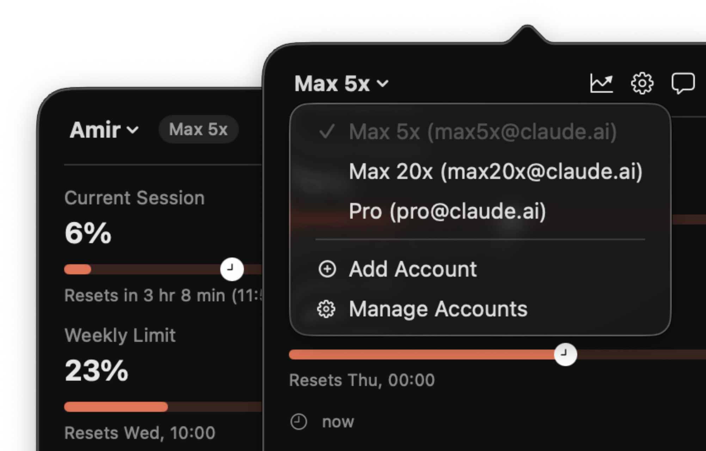
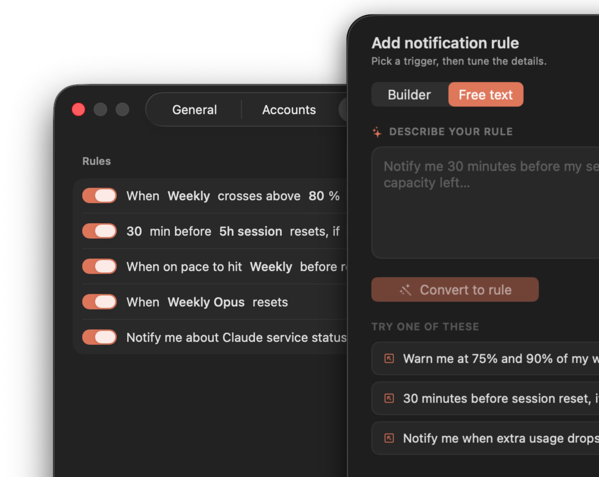
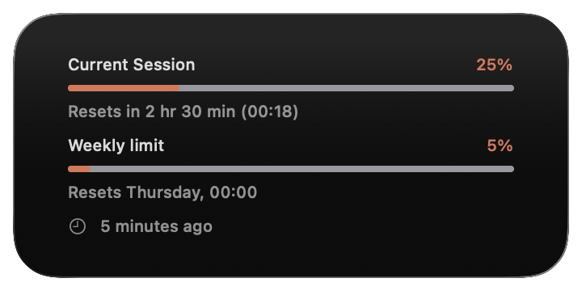

Usage for Claude
Track every Claude account you use — session, weekly, and Opus limits — from your Mac menu bar and your iPhone.

Every account you use. One quiet menu bar icon.
Every Claude account, one menu bar
Add your work and personal Claude accounts and switch between them from the menu bar title — no signing out, no re-logging in. Each account keeps its own usage, history, and plan badge, and they all refresh quietly in the background, so the one you switch to is already up to date.
Your first account is free; tracking more at once unlocks with Pro.

Alerts in your own words
Build a rule by hand, or just describe the alert you want — “warn me at 80%” — and the app turns it into rules you can review before saving. Fire on thresholds, resets, when you're on pace to hit a limit, or a set time before a reset. The free text tab runs on Apple Intelligence, so your words are parsed on device and never leave it.

Know when it's not you
The app watches Claude's service status and shows a dot on the menu bar icon plus a banner with the details when there's an outage or degraded performance — so you stop troubleshooting your own setup. Turn on a status rule to get notified too.
Track your usage over time
The History view charts your Claude usage with interactive graphs and a GitHub-style activity grid spanning the past year. Filter by range, spot trends, and export to CSV.

Share your stats
Generate beautiful shareable images of your usage chart, activity grid, and key insights — ready for social, messaging, or your camera roll.

The iPhone app is now fully featured
Sign in directly on your iPhone — no Mac required. You get the same dashboard: current session, session history, insights, activity grid, and usage windows. Set alerts by describing them in plain language, like “warn me at 80%”, and everything stays in sync through iCloud. Get it on the App Store →

On your wrist, at a glance
Session, weekly & Opus limits as complications for every watch face.
Smart predictions & insights
See when you're on track to hit a limit based on your current pace, and let the Subscription Value insight tell you whether your plan still fits how you actually use Claude.

Seamless multi-Mac sync

Your history syncs automatically via iCloud. Switch between Macs and always see one complete, unified record.
New limits appear automatically
When Anthropic adds a new model or usage window, it shows up in your dashboard and menu bar on its own — no app update needed.
Widgets for your desktop
Add elegant Rings, Compact, or Bars widgets to your Mac desktop or Notification Center — instant visibility, no app open required.


Recent updates
Add your work and personal accounts and switch from the menu bar title — no signing out. Each keeps its own usage, history, and plan badge, and all refresh in the background.
Sign in directly on iPhone without your Mac. The full dashboard, session history, insights, activity grid, and usage windows — synced through iCloud.
Describe the alert you want — “warn me at 80%” — and the app builds the rule for you, including reset notifications.
The app monitors Anthropic's service status and shows a banner, so you know when the problem is on Claude's side rather than yours.
When Anthropic adds a new model or usage window, it shows up in your dashboard and menu bar with no app update needed.
Dramatically less background disk and CPU work for better battery life, faster charts, plus a launch crash and a set of sign-in issues fixed.
Also included: a rebuilt Accounts pane in Settings, a refreshed account switcher and paywall, live progress-bar previews in Settings, and dozens of polish fixes across 16 languages. Thanks for using Usage for Claude!
Frequently asked questions
Ready to track your Claude usage?
Free on the Mac App Store. Fully featured apps for iPhone, iPad & Apple Watch included.